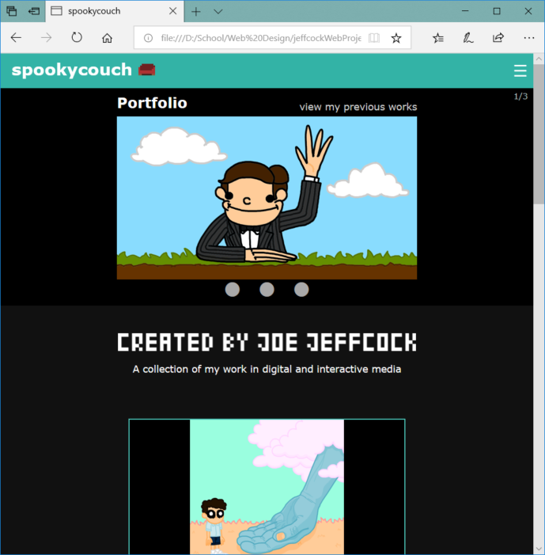
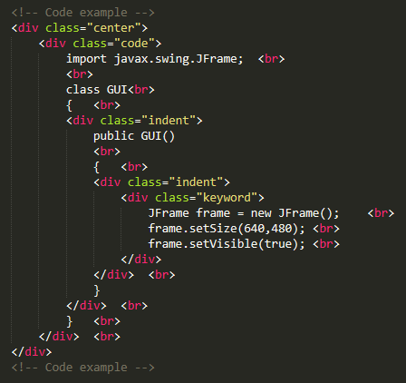
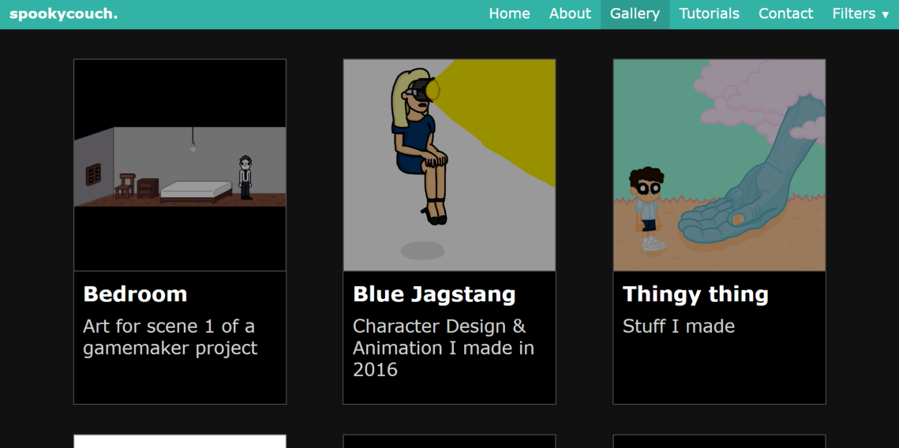

Development was carried out page-by-page, however I have arranged everything by process for a clearer flow and overview of design choices. The website was published on GitHub Pages for testing and viewing on mobile.Last updated 31 May 2018, 1030hrs
Knowing that we would be working with text, the first images that came to mind were of the computers used in the Alien franchise and Fallout video games. These were akin to personal computers in the 80s by companies such as IBM, which used green phosphor screens for their monitors.
screenshot of Fallout 3 taken from user knowledge2035, Flickr
Incorporating this design into my project sounded like a fun idea, and I thought it would be useful to create visual revision notes for upcoming exams and further studies in university. The notes would take the form of a website with different sections for each subject, along with segments of code and diagrams pertaining to relevant topics. This, however, did not suit the design brief for the project and so I returned to the drawing board. Learning how to program
games in java at the time, my attention then turned towards interactive and digital media.
The Idea
After many years of aspiring to be a game designer I have amassed quite a few drawings and cartoons, and thought it would be nice to make a portfolio
of all my past works. Meanwhile, an added tutorial on programming video games in java -inspired by my own inquiries into the language- would allow me to implement my earlier ideas and function to bring in more traffic to the website; a dedicated web page being beneficial to anyone interested in the subject, as I had found it difficult to source similar articles online.
Still from Exploding Gum (2010), my first original animation which can be viewed here
I feel that this new concept will enable me to express my creativity in designing a more visual-based website, as well as promote my work as my own client. The java tutorial would also serve as a stylistically different platform for learning coding, covering topics that I had found to be informative and insightful when I first approached the subject myself.
Being a media portfolio website, my aim is to create displays that are vibrant yet emphasise on content. To do this, I intend to create a minimal design that makes effective use of contrasting colours to direct users' attention to important content and information. I have written a list of personal requirements for the website below:
Vibrant & functional colour scheme
Effective use of layout
Easy to navigate
Offer a selection of ways to view content
Unique display of text using css
Variety of interactivity using javascript
Personalised responsive design
Design a website I will enjoy creating
Research
Before starting the design process, I researched a few popular websites to see how content is purposefully laid out. Looking at text-heavy websites like facebook and GitBook, I noticed a vertical flow of content with white and gray being the primary colours used in the background.
Observing image heavy-websites such as Instagram and Pinterest, items displayed in grids that offer a selection of content to choose from. Applications like Netflix and even Spotify had also shown an effective use of grids, colour and contrast in their browse sections, employing dark backgrounds to make content stand out to users.
The basic design functions of these websites were taken into account when I first started creating the layouts and colour schemes of the web pages my project was going to have.
Layouts
The main consideration on the layout for the website was the amount and type of content that would be displayed on each page. To test the appearance of each type of web-page, a non-responsive proof of concept was produced using bootstrap and css.
Design plans were done in a desktop-first manner, as I expect professional clients and frequent users to access the website on desktops and laptops - being a media website with an added coding tutorial. That being said, layouts were designed with mobile devices in mind, such that the transition from large to small screens is smooth and easy to conceptualise during development.
Home & Gallery
The home and gallery pages will be comprised mainly of images and diagrams, meaning a grid-based approach would be quite suitable. A responsive grid could capitalise on the space available on the screen and show a high amount of content in an organised manner. It would also make the website more interactive as content is displayed as a selection rather than in a standard consecutive order.
Screenshot of the test grid made in bootstrap (resized for this page). Click here to see the full web page
While I was able to achieve the desired layout using bootstrap, it did require an added degree of specification due to the 12-column format of each row. The built-in responsiveness of the framework also meant that a high amount of reworking would need to be done to create a customised look for mobile devices, so I decided to model grids in the website using css instead.
Grids will be collapsed to columns of 2 and 1 when these pages are viewed on mobile devices through the use of media queries.
About & Tutorial
On the other hand, the tutorial and about pages will contain a large amount of text, and as such a portrait, bordered, blog style was chosen for them; a downward flow of content making it easier to read. Since the blog pages are designed in a portrait-like manner, the mobile versions of these pages would remain almost identical to the desktop ones, while hyperlinks will be created to jump to content lower down on the site for ease of access.
Screenshot of the blog made with css (resized for this page). Click here to see the full web page
Contact
Given the contact page would have the least amount of content with the most variance, I approached my friends in the art department for advice on its layout. I proposed a three-box page where content is divided based on the type of information. They were agreeable on this, while my friend in the media foundation added that readers have a bias towards the right side of documents, magazines usually placing important information there so it is noticed.
Screenshot of the content page made with css (resized for this page). Click here to see the full web page
I first approached the contact page using the box-model, however realised that it would be more difficult to edit the layout later on, and opted for a grid display instead. This would allow me to change the setup of the content and add more items to the grid without having to rework the position of individual boxes.
Like the home and gallery pages, the grid in this page will be collapsed to have fewer columns when viewed on smaller screens and devices.
Colours Used
All pages of the website follow a similar colour scheme, primarily consisting of turquoise, black and white. I have laid out the colours used for each page below to ensure consistency. Turquoise was chosen as the website's "corporate colour" as it is vibrant yet easy on the eyes, fitting with the theme of an art-based website.
Black was chosen as the primary colour for the home, gallery and contact pages to place an emphasis on content, as it allows bright colours to stand out
against the background.
Home page:
Gallery:
Contact:
The about and tutorial pages employ white as the primary colour to maintain a more formal look compared to the others.
Being content-heavy, I feel that the light background makes the pages easier to read as it is similar to text printed on paper that society
has grown used to.
The iterative model was chosen in developing the website, as I had known from the initial design process that it was going to consist of a few pages, each with its own functionality. This model allowed me to test the website early-on, as well as produce fully-working web pages throughout the development cycle. I felt that this model would benefit me personally, as milestones would be much clearer when features are completed one at a time, while I was able to approach testing of different functions at my own pace.
Development was carried out in the following order:
Tutorial
Gallery
Index
Navbar
About
Footer
Contact
The tutorial, gallery and index pages were of the highest priority to me, and as such were worked on first. This is due to the higher amount of content and functionality I knew they were going to need; finishing them earlier allowing for more time to test the website and make sure all was in order.
Responsive design was implemented during development, as I wanted to size elements based on content rather than the device being used. As such, three generic breakpoints were chosen at widths of 480px, 800px and 1100px to start with for each page, where individual pages would be developed for desktops first followed by smaller devices. Breakpoints would then be added and changed according to how content would appear using different media queries.
Blogs - Tutorial & About
When I first approached the blog pages, I used a percentage for all the widths to make responsiveness easier in future. This, however, resulted in some awkward layouts and positioning of elements, and instead opted for fixed widths and media queries to account for devices of different dimensions. This allowed me to set exactly how content will look on different sized screens, such that its would flow naturally on all devices by using breakpoints based on how information was laid out on the page.
Screenshot of the tutorial in tablet view, made to fit
The main elements used to create the blogs are the divs of class "blog" and "post". The "blog" class dictates the white fill you see around the right text here on this page, while post separates content by chapters both structurally, as it is contained in individual divs, and visually by adding a gray line to the display. The white blog space was set to a width of 1000px on screens larger than 1100px wide, shrinking incrementally according to device size before occupying the entire screen width on displays less than 600px wide.
Tutorial - Coded Examples
In create the coded examples, I first researched the colours of earlier mentioned phosphorous screens from the 80s. Narrowing it down to shades of gray and green, I created new css file with the class "code" that would serve as the virtual screen for coded examples. Rounded borders were added and the colour of the inner text was set to "#00FF33", a shade of green very similar to that of the old computers. To complete the look, I sourced the royalty free IBM Plex Mono font from Google fonts to be used in the code, making it appear as close to the actual computers as possible. I then considered the structure of the coded examples, and added indents, highlighting and comments that would be needed.
Grids- Home & Gallery
The decision to used fixed widths for separate breakpoints made development of the grids in the home and gallery much simpler, as I was simply able to choose a width (360px) for each of the three grid-columns that would appear on desktops and add content to them accordingly. Once this was done, I resized the browser until it was small enough that the layout would be broken, and reduced the number of columns on screen at that specific width using media queries. Once the screen was too small for the default grid-column width, it was set to the screen width itself such that it would fit perfectly on handheld devices.
Here's a brief rundown of the number of columns at different sizes:
> 1280px - 3 columns
< 1280px - 2 columns
< 860px - 1 column
< 420px - 1 column, 100%
Screenshot of the gallery in portrait
A second grid-size was also added to account for tablets on portrait and screens with small heights (<500px), displaying grid items in one column with a much larger width to make full use of the dimensions of these devices.
Modal Gallery
The modal gallery on the gallery page was developed by creating a large div of the same dimensions as the screen, containing image, audio and video elements, a header and span for titles and descriptions, as well as buttons to close the modal and change slides. The display of the modal gallery is set to none by default, and can be brought up by clicking on a grid item on the page. Grid items are each given an ID, which it will pass to a javascript function that will retrieve the appropriate media from an array and display it as a modal item.
The modal items take up a percentage of the screen with buttons to change slides on either side. Buttons will float to the sides and the modal will take up more screen space - among other minor changes - when viewed on smaller devices (<860px in width) to make the modal gallery responsive and allow media to be displayed at an optimal size.
Header
To create the header of the website, I first started with a simple div of height 50px that spanned the entire width of the screen. I knew the navigation buttons would need to be split into two groups; those that collapse in mobile view and those that remain, so divs were created for each of those too. I then went about creating horizontal lists with links and drop-down menus that appeared off-screen.
Following this, a media query was created for smaller devices, where a hamburger icon was set to appear and page navigation buttons displayed vertically, off the screen. Links were made live and the navbar was copied to each page, needing only javascript to be added during implementation that would operate the drop-down and sliding menus.
Screenshot of the navbar viewed on a mobile device
Footer
I wanted the footer design to be simple, displaying the organisation, my name as the developer and links to social media. As such I went for a three-sector approach, where the first two sectors were allotted a third of screen space - calc(100% / 3) - each while the last were marginalised to the right.
Diagram depicting the footer layout
I found this to be effective as it allowed me to maintain the footer in three equal parts, with the last one being able to host a multitude of content that could be rearranged freely. This proved useful in responsive design as the three sections are shifted to a vertical layout at smaller displays, the last one split into two further rows for text and icons. The footer is set to be 100px and 200px high on desktops and mobile devices respectively.
Contact
Given the simple layout displayed in the design process, developing the contact page for the website was fairly easy. However, since the grid items were of different sizes, I needed to find a way to suitably display them responsively depending on the size of the screen being used. In doing so, I came up with three different layouts; one each for desktops, tablets, and phones/devices with relatively low heights. Three basic dimensions were chosen to start with, with widths of <800px, 800px> & <1150px, and >1150px. I then tested the page at different sizes to establish breakpoints and create more specific queries between the three. The row content for each of the three basic layouts is listed below:
> 1150px
row 1 - Social Media, Map
row 2 - Mailing List, Map
< 1150px
row 1 - Map
row 2 - Social Media, Mailing List
< 800px
row 1 - Map
row 2 - Social Media
row 2 - Mailing List
As with the other grid pages, a designated grid template was set for devices in portrait mode and screens of smaller heights.
Coded examples were first made by me in Java based on how appropriate I felt they were in teaching game design. This was then moved over into html to be styled by "code.css", and descriptions were added for each leg of the tutorial. I was at first going to use screenshots to show how the products should look like, but decided interactive applications would garner more attention instead. Given the similarities between Java and Javascript, translating the code over into my document was relatively straightforward, using canvases instead of GUIs and Intervals instead of timers.
Screenshot of an interactive example coded in javascript
Gallery
Photos and descriptions were added to the gallery, followed by the implementation of a modal gallery and a content filter. The modal gallery is a block of html at the start of the document that takes up the entire screen, containing buttons and one of each - image, video and audio - element. Each media element is given an ID, and clicking on one will bring up the modal and set its media to that of the index ID in an array of all the elements on the page. Meanwhile, hovering over an image will cause it to "light up" while all the rest are darkened, until another is hovered over to the same effect.
Filtering the gallery to display art
The filter for the gallery was done separately from the features mentioned above, removing and displaying elements from the page based on the category it was given in its class. To implement this into the modal gallery, an array of items shown had to be created that had items added based on category if they were set to be shown by the filter. This would be sorted to make sure items appear in the correct order, and the array passed to the modal gallery for viewing. The challenge of implementing these features separately will be mentioned later on in the development blog.
Index
Since I did not use bootstrap in creating my website, I had to find a way to create my own carousel to showcase highlights in the homepage. I achieved this by setting each slide in a div of width 100%, positioning one at the top-left of main, while the rest were located off-screen. Javascript could then be used to change the coordinates of the slides, with a transition in css to animate them in and out of the screen. Buttons were also added such that users could choose which slide to display.
Carousel viewed on high height:width ratio screens
Some of the images do cut off towards the right on screens with significantly higher height than width. This however, was purposefully designed, as I did not want to sacrifice the height of the image to account for the exceeding width, while most of the key content is located towards the left of the carousel images and still remain visible.
Links to each page on the site were added with images as a visual directory on the home page, though the store link brings users to a third-party website rather than an in-built store. This was chosen as independent media developers rarely handle transactions by themselves, outsourcing product sales to other websites with better infrastructure such as Etsy, BigCartel and Redbubble.
Navbar
With the menus already in place at different device sizes, javascript was added such that menus would drop/slide in and out of the screen by changing their absolute coordinates, while users could click outside of the menus to retract them and continue surfing the site to increase intuitiveness. Further script sets the display of a translucent screen that darkens content outside of hamburger menus, as well as changing the direction of arrows on drop-down menus.
The couch logo
The website logo depicts a couch drawn in low-resolution to give the website a more casual and artistic feel, as well as fitting with the theme of vintage computers in the tutorial section.
About
Although the about page was done later in the development process, I kept a word document aside to list any relevant ideas or challenges faced throughout creating the website. This made it easier to expand on thought processes when it came to writing full documentation about the project's development.
Footer
Links to related school websites were added to the footer, with low-resolution buttons to social media sites that I had drawn to fit the theme of the project.
Facebook, Instagram and Twitter icons
Contact
Lastly, an embedded google map was added to the contact page, along with a form to subscribe to the proposed mailing list for the website and links to social media. Simple validation of the form was done in html, as pop-ups such as those used in Javascript tend to hamper user experience, while in-built alerts do a great job of alerting users as to what they need to fill in. Post was used in the form as email and name are relatively sensitive information, the form itself designed with a server in mind that would use "action" to redirect users to a php file/page to process the data.
Form validation using "required"
I first attempted to link google maps to the iframe by myself using a href, however found that google had blocked this option - presumably to enforce fair use of their product. With other options requiring a paid API, I asked my classmate, Roman, if he was able to get google map support on his site. He directed me to an embed option, in which google provided a specific link that allowed users to display their maps, and the problem was solved. A dummy location in my home country was chosen for the google map as a personal touch.
All hyperlinks were tested in order on the website to ensure they are working. Unlike the usual test plans that deal with normal, abnormal and extreme data, I have devised a much simpler one (Y/N) to ensure that all links are redirecting as they should. Any anomalies will be noted post-testing.
Social Media Links
Location in footer unless otherwise stated.
Website
Location
Index
About
Gallery
Tutorial
Contact
Contact (main)
Facebook
Y
Y
Y
Y
Y
Y
Instagram
Y
Y
Y
Y
Y
Y
Twitter
Y
Y
Y
Y
Y
Y
Bellerbys Computing Foundation Link
Website
Location
Index
About
Gallery
Tutorial
Contact
Bellerbys
Y
Y
Y
Y
Y
Links to other pages within the website
Page
Location
Index
About
Gallery
Tutorial
Contact
Index - Logo
Y
Y
Y
Y
Y
Index - Nav
Y
Y
Y
Y
Y
About
Y
Y
Y
Y
Y
Gallery
Y
Y
Y
Y
Y
Tutorial
Y
Y
Y
Y
Y
Contact
Y
Y
Y
Y
Y
Chapter Jumps
Location
Chapter
Intro
0.5
1
2
3
4
5
6
7
Epilogue
Tutorial
Y
Y
Y
Y
Y
Y
Y
N/A
N/A
Y
About
N/A
N/A
Y
Y
Y
Y
Y
Y
Y
N/A
Mailto and Tel
The mailto and tel protocols on the contact page were tested on browser and phone and worked as they should.
Responsiveness
The website was designed to be responsive to mobile phones and tablets, however a few additional breakpoints cropped up when testing different sizes. Responsiveness was tested up to a minimum of 300px in screen-width, as this is the minimum for most phones today, while most companies design their websites to this specification. The website was also deployed online to GitHub Pages so it could be tested across devices such as mobile phones with ease.
The tutorial and about blog pages were tested first, and it was discovered the test tables above were too big for the screen at smaller widths; font-size was reduced such that it would fit within the designated margins. Borders of the canvases for tutorial examples were also displaying sub-1px on mobile phones, which I discovered to overlapped by content drawn inside by javascript. To solve this, outlines were used instead of borders as they are rendered outside of the element. All other content was displayed as expected at all device sizes, and as such, no further changes were made to the presentation of these pages.
At screen widths of lower than 400px, the grid items took up more space than the visible screen space on the home and gallery pages. I realised this was because I had used 100vw for the grid item width, making it occupy the extra space covered by the scrollbar. To solve this, I instead used a width of 100%, and kept the height to 100vw such that it would maintain a square-like shape. Following this, content appeared as it should at all device sizes.
Contact page was tested at all sizes on desktop and the grid items fit accordingly. The mailing list did however appear awkward at width:300px, so the inputs were changed to float left and the box expanded to make it look flush with the rest of the page. The form was also not rendered properly when tested on my Samsung phone's chrome browser, as radio buttons appeared on top of the text fields. I proceeded to split the fieldset into two - by text inputs and radio buttons - and the form appeared as intended across both browsers.
The navbar and footer were also tested at different device sizes. The footer appeared as it should on each page, however the navbar had broken at around 310px in width on the tutorial and about pages due to the size of the "Contents" button. The couch logo size was reduced by 2px below widths of 320px to account for this, the navbar appearing normal up to the minimum screen width afterwards. Drop-down and hamburger menus were tested for each page and appeared in order, no changes were made.
Browser Support
Microsoft Edge
The site was also tested at different sizes and orientations on Microsoft Edge, and most pages appeared as they should. There were, however, a couple of bugs in the display specific to Edge, such as a 1px margin at the bottom of the body on half of the pages. The bug appears to be quite common across development for the browser after searching through forums, and was solved with a simple 1px box shadow on the footer to cover any remaining space.

Testing the site in MS Edge
Images contained in flex boxes on the home and gallery pages also appeared to be stretched at different screen sizes. I discovered this was due to their alignment, applying an "align-self:center" to make them display normally. I then cross-checked these pages in Chrome to make sure the layout was not affected by this change, and found everything to be displayed as expected.
Favicons were not working on MS Edge, however forums online indicated that they only appear when the website is deployed online and not through localhost. Website was tested online through github using Edge and the favicon appeared.
Mozilla Firefox
The website was tested on Mozilla Firefox and everything appeared as expected. Javascript was fully functional and the website was fully responsive when viewed at different sizes. As such, no changes were made to the project.
Testing the site in Mozilla Firefox
Menus
Pages with a large amount of content were found to render css relatively slower than others, causing menus to occasionally appear in their default positions first before transitioning to a hidden state. To solve this, styles were added inline for the drop-down menu and hamburger screens on the index, tutorial and about pages such that their hidden states (off-screen or visibility:hidden) would render first, almost instantaneously, before the css is applied.
Index- Carousel
I noticed low performance when the carousel was changing slides during testing, and realised that setting the left position of all four carousel items individually was inefficient and placed an unnecessary load on the browser. To resolve the issue, I first placed all the slides into one div such that only one coordinate needed to be changed instead. It also made the code easier to manage as sizing of individual slides would be based on the large slider rather than the carousel itself. Javascript and css was altered accordingly.
Screenshot of the change viewed from the inspector
The framerate was still quite choppy, so I set the "transform" property to change coordinates via translateX, such that the browser would only need to repaint the slides at a different positions instead of reworking the entire layout at each frameskip. Once this was done, the carousel was able to perform smoothly.
To ensure the website remains enjoyable to users, my first priority was to ensure download speeds were as fast as possible. The total size of images is kept to a maximum of 2MB per page to ensure they load quickly and do not keep users waiting. Video and audio was compressed as far as possible while keeping good quality (720p HD for video and 128kbps for audio) to ensure fast load times without sacrificing on visuals and sound.
Website was tested with uncompressed media without using a cache and the video the gallery page took around 2-3 seconds to load. Using compressed media under the same conditions, the gallery page took less than 1 second to load. All other pages were tested too and loaded almost instantaneously.
Intuitiveness
I have also tried to keep the functions of the website streamlined and easy to pick up, adhering to standard conventions used by other popular websites, such as drop-down menus indicated by arrows and the use of dots to change slides in the carousel. Intuitiveness was tested by observation of users interacting with the site, which will be covered later on in feedback.
Readability
While discussing colour schemes with one of my teachers, Ms. Musgrove, she pointed out that white text on a black background may be easier to read in some cases, such as where the reader suffers from a visual impairment or in poorly-lit environments. To account for this, I have added a "light switch" that toggles the primary colours of the website between light and dark using javascript, as exemplified below:
The button queries all of the relevant elements in the page and changes their styles accordingly.
Appearance
To give the website a more professional and visually appealing look, the borders that were initially used on the home and gallery page grid items were removed and replaced with box-shadows. I feel this made the website more pleasant to view as it removed the harsh colours and edges that were present before for a more natural feel.
Comparison between bordered and shadowed grid items
Tutorial
During implementation, divs were used to create the indentations in code examples for the tutorial. It was discovered in testing that selecting text from the examples to be copied into an IDE would result in blocks of code without any indentation, making it hard for users to read and edit them.
Selecting text from the examples indented with divs
As such, the "indent" divs were removed and replaced with spaces for each line. This allowed for better examples to be copied and had also made html easier to read and write as lines would be clearly defined by the number of space entities that preface them, rather than through a series of divs. The indent class was kept to keep comments in a block display with a left margin, while (one space x 2) was used instead of   (two spaces) as java IDEs could not read the latter.

Code example written with divs for indentation; somewhat difficult to conceptualise
Once changes were made, coded examples were found to be working fine when compiled and run using an IDE.
Feedback
I asked a few of my peers around school to test the website and gathered their opinions on any improvements that should be made. I also observed how they navigated the website to see if there were any changes that needed to be made to make it more intuitive.
Alesia
The website was tested by my neighbour and media student, Alesia, and I observed that she was able to navigate the website successfully, making use of most of the features available without direction. She did however, miss out on the "low light mode" button, and responded that it went unnoticed due to its size. Her feedback was positive, saying that she liked the layout and minimal design of the website, as well as highlighting a good use of colour throughout each page. She added that a brief description and instructions for the gallery may help users to better understand the page and why it was added.
The low light buttons were resized to make them more prominent and noticeable based on observation, while a description was added to the gallery in response to Alesia's feedback.
Yuri
I showed the website to my schoolmate from the art department, Yuri, to gather some feedback on the website. She was able to easily navigate through the features of the website, responding that its overall feel was good however more identity needed to be added to the index. Having made a portfolio herself, she said it was important that readers knew who the portfolio was for when they entered the website, and proposed I display my name and a picture of myself near the top of the page to quickly establish my identity.
The banner created for the home page
A large banner was created for the website that would be placed directly after the carousel, while the "About" grid item was moved further up along the grid in response to her feedback. I feel that her comments were useful as they provide an insight from someone who works closely with portfolios as part of her education.
Ms. Musgrove
Lastly, I approached my teacher, Ms. Musgrove, for feedback on the design of the website. She mentioned that continuity should be added to the home page, as it seemed that there was no more content below the carousel. Ms. Musgrove added that a brief description of the website should be present on the index to inform users of the purpose of the website, while the clickable area of the navigation links towards the bottom of the page should encompass the whole grid item, as it is standard practice by other websites.
The comments were taken into account, and a description was added below the banner to explain the website as well as add continuity to entice users to scroll down. The clickable area of the links were also increased to span entire items as seen on other websites such as Codecademy.
Analysis of User Testing & Feedback
The overall interaction with the website has shown that it is fairly intuitive as users were able to understand the features of the website without instruction. It also provided useful feedback for me to improve the website by observing any limitations in design and gather suggestions for improvement from a different perspective.
A recurring theme in being unable to achieve desired layouts for the website was setting element heights to values that were unaccounted for. This happened due to w3's specifications on calculating height in html elements, varying in a myriad of ways based on different conditions. Often my settings would not satisfy these conditions and cause the sizing of an element to show unexpected results, such as appearing too small or not even displaying at all. As such, I will be covering a couple of examples where I faced this problem and how I overcame it.
When first attempting to create the contact page, I had set a min-height of main and based the grid's height on main by percentage. I was unable to achieve the desired result of the grid, a child element, being the same height as the parent without changing min-height to height, and could not understand why.
Contact grid was not occupying all available space as intended
After some experimenting, I discovered that the height of the child div was based solely on its content, meaning it had zero height by itself. I then decided to search for an explanation on the internet and was directed to the w3 website, which stated that the calculated height of a child element as a percentage of its parent will be zero if a definite height is not set. With this knowledge, I was able to approach the problem in a different way to solve the layout of the grid.
Another instance of this issue was seen in resizing the index page, where the carousel would change in size however the image would remain the same. I realised this was because I had set the height of the image to a percentage of a flex box, causing it would be ignored on resize. To solve this, I instead set the height relative to viewport (36vw & 45vh) such that it would always be calculated and revalidated.
Through these challenges, I was able to learn the intricacies of designing websites in html and css, and feel more prepared to tackle problems with layout and element height in future. This also exposed me to the limitations of rendering in websites that developers have to grapple with to deliver consistent experiences for their users.
Integration
Since the website was designed using an iterative model, some work needed to be done when fitting different parts together, as modules were developed individually and not always compatible with each other. This resulted in changes to javascript and css, since there were notable differences in functionality between different pages.
This was most apparent in integrating the filter and lightbox javascript for the gallery, which were both done separately from each other at different points along the development cycle. Many variables were reused between the two scripts, while arrays for filtering images and displaying them did not match. A large amount of reworking was needed to be done as a result, however frequent use of comments and clear indentation made the job much easier as I was able to understand how different variables and functions fit in the program.
Integration of the different parts of the website taught me the real significance of refactoring a project in software development, as sufficient time and effort needs to be put into making sure the different components of the website work together.
Non-default root font sizes
I had set most of my design to be responsive based on pixels, sizing based on media queries on the screen size to change layouts. I had however, until reminded by my teacher, Ms. Musgrove, forgotten that people often change root font sizes - especially on phones - to make reading easier. Upon testing my website with a different root font-size, the layout of the navbar was broken. To solve this, I went through the navbar css file and made all measurements absolute, such that the navbar would remain the same regardless of the root font, at a relatively large and readable font size of 24px.
Screenshot of the gallery page with a root font-size set at 30px
Grid content boxes in the home and gallery pages were also affected by the change in font-size, so the rem measurement was applied to the containers to account for extra space needed for larger fonts. The size of the image container remained the same for consistency.

Screenshot of the gallery page with a root font-size set at 30px, post-modification
I felt this was challenging as I had already completed the structure for all of the pages, and thus had to come up with a way to solve the problem without any major expense to the layout of the website. I first researched other websites to see how they tackled the issue, and to my surprise discovered some of the more popular social media sites ignored it altogether and kept all content fixed. I applied this to my navbar, setting fixed dimensions such that font size would not affect its layout. I then needed to think of a way to let the size of the image container stay the same while making the text container relative. Remembering the calc() function, I set the height of each grid item to the sum of the imageContainer's height in px and the remaining textContainer in rem to fix the sizing problem.
This highlighted the importance of a good design plan, as the redesign would not have been necessary if variable font sizes were accounted for before development. Although it is difficult to accommodate to every possibility, a good preventative measure would be to interview and observe wider demographics to see how they browse websites, such that different outcomes can be ruled out during the design process.
I feel that the website fulfils the requirements I had set when I first conceptualised the website in April; below is a summary of how aims were met during development:
Colour schemes were researched to ensure an effective display of content
A mixture of grids and block elements was used appropriately throughout the website depending on page features
Common conventions for navigation and interaction were used to make the website more intuitive
The carousel, modal gallery, code tutorials and interactive examples offer a wide selection of different content to users
Java examples on the tutorial page enabled me to experiment with the presentation of text using css
Javascript was used in menus, image displays and games to offer a variety of interactivity throughout the website
A range of media queries used on each page has created a responsive website where content is designed to fit at each size
The project was fun - graphic design throughout the website allowed me to express my creativity, while the use of javascript created a new vessel for expanding programming skills
During development of the java tutorials for the website, a new goal had arisen to expand my knowledge of programming skills over the course of the project. I feel this was a success, as the handling of html elements in javascript had also given me a better understanding of how high-level programming languages deal with passing data between functions, and exposed me to a new environment for problem-solving using code. Converting java into javascript had also shown me how different languages are connected to each other through their similarities, as well as the different approaches to processing data such as in intervals and the declaration of variables.
Improvements
I feel the most notable improvements made to the website during development would be the addition of banners and descriptions based on feedback, as well as changing the appearance of grid items to incorporate shadows over borders. I feel this made a significant impact on the context and appearance of the final product, giving users a better idea of what the website is about while delivering a more professional look and feel.
Given more time, I would like to have attempted to make a small text game in javascript akin to The Hitchhiker's Guide to the Galaxy on the BBC website, as well as set up a server with PHP and database support to improve user experience. This however, was not appropriate given the scope of the project and could be a consideration for future development and upgrading of skills.
Conclusion
Overall, the project highlighted the importance of good planning in creating a final product, a thorough design plan allowing development to run smoothly with fewer problems during implementation. It had also made me appreciate the effort that goes into creating websites that can run on the multitude of devices available today, as I now have a better understanding of the amount of customisation and specification that goes into responsive design than when I first started the course.